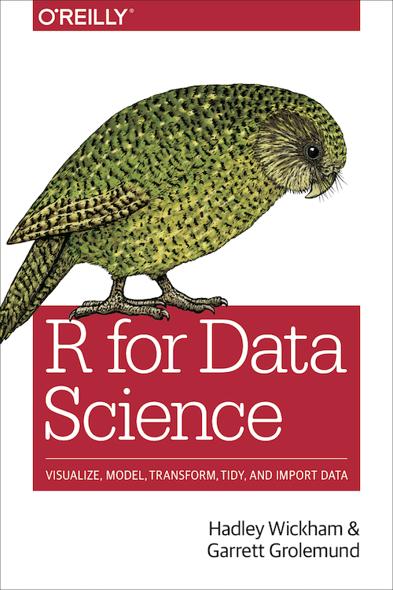

Content
An Overview of Data Science
Getting Data into R
Data Cleaning and Tidying
Data Manipulation and Transformation
Exploratory Data Analysis
Modelling
Communication
School of Computing and Information Systems,
Singapore Management University
09 Jan 2023
An Overview of Data Science
Getting Data into R
Data Cleaning and Tidying
Data Manipulation and Transformation
Exploratory Data Analysis
Modelling
Communication
Reference: R for Data Science
Tidyverse is a collection of R packages that share common philosophies and designed to work together for doing data science.
The code chunk above performs the following three tasks:
Create a packaging list called packages.
Check if the package(s) on the list have been installed in R, if they have yet to be installed then go ahead to install the missing package(s).
Launch the packages in R using library().
The goal of readr is to provide a fast and friendly way to read rectangular data (like csv, tsv, and fwf).
It is designed to flexibly parse many types of data found in the wild, while still cleanly failing when data unexpectedly changes.
readr supports seven file formats with seven read_ functions:
read_csv(): comma separated (CSV) files
read_csv2(): uses ; for the field separator and , for the decimal point. This is common in some European countries
read_tsv(): tab separated files
read_delim(): general delimited files
readr
read_fwf(): fixed width files
read_table(): tabular files where colums are separated by white-space.
read_log(): web log files.
readr functions guess the types of each column and convert types when appropriate (but will NOT convert strings to factors automatically).
The code:
Compared to the corresponding base functions, readr functions:
Use a consistent naming scheme for the parameters (e.g. col_names and col_types not header and colClasses).
Are much faster (up to 10x).
Leave strings as is by default, and automatically parse common date/time formats.
Have a helpful progress bar if loading is going to take a while.
All functions work exactly the same way regardless of the current locale. To override the US-centric defaults, use locale().
tbl_df()tbl_df() wraps a local data frame.
The main advantage to using a tbl_df over a regular data frame is the printing:
tbl_df() is a function of tibble package. tibble package can be installed either from RCRAN directly or from tidayverse package.
For more, read Chapter 10: Tibble of R for Data Science
Now, use the code below to view the data.
# A tibble: 19,515 × 20
Project Nam…¹ Address No. o…² Area …³ Type …⁴ Trans…⁵ Nett …⁶ Unit …⁷ Unit …⁸
<chr> <chr> <dbl> <dbl> <chr> <dbl> <chr> <dbl> <dbl>
1 PEIRCE VIEW 557 Up… 1 113 Strata 840000 - 7434 691
2 FLORIDA PARK 54 Sun… 1 312 Land 3040000 - 9737 905
3 BULLION PARK 164 Le… 1 75 Strata 860000 - 11467 1065
4 CASTLE GREEN 483 Yi… 1 107 Strata 1000000 - 9346 868
5 HAPPY ESTATE 36 Tho… 1 687 Land 7000000 - 10183 946
6 TEACHER'S HO… 148 Ta… 1 228 Land 2880000 - 12659 1176
7 THE PANORAMA 20 Ang… 1 94 Strata 1510000 - 16064 1492
8 THE PANORAMA 16 Ang… 1 42 Strata 710000 - 16905 1570
9 CHIP THYE GA… 8 Yio … 1 207 Land 2800000 - 13500 1254
10 TEACHER'S HO… 16 Kal… 1 232 Land 2300000 - 9935 923
# … with 19,505 more rows, 11 more variables: `Sale Date` <chr>,
# `Property Type` <chr>, Tenure <chr>, `Completion Date` <chr>,
# `Type of Sale` <chr>, `Purchaser Address Indicator` <chr>,
# `Postal District` <dbl>, `Postal Sector` <dbl>, `Postal Code` <dbl>,
# `Planning Region` <chr>, `Planning Area` <chr>, and abbreviated variable
# names ¹`Project Name`, ²`No. of Units`, ³`Area (sqm)`, ⁴`Type of Area`,
# ⁵`Transacted Price ($)`, ⁶`Nett Price($)`, ⁷`Unit Price ($ psm)`, …Notice that only the first ten records will be displayed. Furthermore, only the columns that can be displayed on the view will appear.
A dataset is messy or tidy depending on how rows, columns and tables are matched up with observation.
A package that makes it easy to “tidy” your data (not general reshaping or aggregating).
It is an evolution of ‘reshape2’.
Five main categories:

PopData2019_fat.csv dataset will be used in this section of our discussion.
Importing the data. The code chunk should look like below:
“Pivotting” which converts between long and wide forms.
tidyr 1.0.0 introduces pivot_longer() and pivot_wider(), replacing the older spread() and gather() functions.
pivot_longer()pivot_longer() “lengthens” data, increasing the number of rows and decreasing the number of columns.%>% or pipe() operatorPipe operator (i.e. %>%) is provided by the magrittr package.
It forwards a value, or the result of an expression, into the next function call/expression.
Refer to the magrittr vignette for more examples.
pivot_longer()A more challenging situation occurs when you have multiple variables crammed into the column names. For example, take the who dataset:
# A tibble: 7,240 × 60
country iso2 iso3 year new_s…¹ new_s…² new_s…³ new_s…⁴ new_s…⁵ new_s…⁶
<chr> <chr> <chr> <int> <int> <int> <int> <int> <int> <int>
1 Afghanistan AF AFG 1980 NA NA NA NA NA NA
2 Afghanistan AF AFG 1981 NA NA NA NA NA NA
3 Afghanistan AF AFG 1982 NA NA NA NA NA NA
4 Afghanistan AF AFG 1983 NA NA NA NA NA NA
5 Afghanistan AF AFG 1984 NA NA NA NA NA NA
6 Afghanistan AF AFG 1985 NA NA NA NA NA NA
7 Afghanistan AF AFG 1986 NA NA NA NA NA NA
8 Afghanistan AF AFG 1987 NA NA NA NA NA NA
9 Afghanistan AF AFG 1988 NA NA NA NA NA NA
10 Afghanistan AF AFG 1989 NA NA NA NA NA NA
# … with 7,230 more rows, 50 more variables: new_sp_m65 <int>,
# new_sp_f014 <int>, new_sp_f1524 <int>, new_sp_f2534 <int>,
# new_sp_f3544 <int>, new_sp_f4554 <int>, new_sp_f5564 <int>,
# new_sp_f65 <int>, new_sn_m014 <int>, new_sn_m1524 <int>,
# new_sn_m2534 <int>, new_sn_m3544 <int>, new_sn_m4554 <int>,
# new_sn_m5564 <int>, new_sn_m65 <int>, new_sn_f014 <int>,
# new_sn_f1524 <int>, new_sn_f2534 <int>, new_sn_f3544 <int>, …pivot_longer()We can break these variables up by specifying multiple column names in names_to, and then either providing names_sep or names_pattern. Here names_pattern is the most natural fit. It has a similar interface to extract: you give it a regular expression containing groups (defined by ()) and it puts each group in a column.
pivot_longer()The output data frame will look similar to below.
# A tibble: 405,440 × 8
country iso2 iso3 year diagnosis gender age count
<chr> <chr> <chr> <int> <chr> <chr> <chr> <int>
1 Afghanistan AF AFG 1980 sp m 014 NA
2 Afghanistan AF AFG 1980 sp m 1524 NA
3 Afghanistan AF AFG 1980 sp m 2534 NA
4 Afghanistan AF AFG 1980 sp m 3544 NA
5 Afghanistan AF AFG 1980 sp m 4554 NA
6 Afghanistan AF AFG 1980 sp m 5564 NA
7 Afghanistan AF AFG 1980 sp m 65 NA
8 Afghanistan AF AFG 1980 sp f 014 NA
9 Afghanistan AF AFG 1980 sp f 1524 NA
10 Afghanistan AF AFG 1980 sp f 2534 NA
# … with 405,430 more rowspivot_longer()We could go one step further and specify the types of the gender and age columns. I think this is good practice when you have categorical variables with a known set of values.
who_longer2 <- who %>%
pivot_longer(
cols = new_sp_m014:newrel_f65,
names_to = c("diagnosis", "gender", "age"),
names_pattern = "new_?(.*)_(.)(.*)",
names_ptypes = list(
gender = factor(levels = c("f", "m")),
age = factor(levels = c("014", "1524", "2534",
"3544", "4554", "5564", "65"),
ordered = TRUE)),
values_to = "count",)pivot_longer()The data frame will look similar to below.
# A tibble: 405,440 × 8
country iso2 iso3 year diagnosis gender age count
<chr> <chr> <chr> <int> <chr> <fct> <ord> <int>
1 Afghanistan AF AFG 1980 sp m 014 NA
2 Afghanistan AF AFG 1980 sp m 1524 NA
3 Afghanistan AF AFG 1980 sp m 2534 NA
4 Afghanistan AF AFG 1980 sp m 3544 NA
5 Afghanistan AF AFG 1980 sp m 4554 NA
6 Afghanistan AF AFG 1980 sp m 5564 NA
7 Afghanistan AF AFG 1980 sp m 65 NA
8 Afghanistan AF AFG 1980 sp f 014 NA
9 Afghanistan AF AFG 1980 sp f 1524 NA
10 Afghanistan AF AFG 1980 sp f 2534 NA
# … with 405,430 more rowsA grammar of data manipulation.
It provides easy tools for the most common data manipulation tasks.
It is built to work directly with data frames.
Speed: dplyr is really fast.
Readability: the code syntax is straightforward and easy to read.
Chaining: never break the chain. More on this later.
Integrates with ggplot2: plot your data in the same workflow that you manipulate it with.
Can be used to analyse external databases without knowledge of additional database query languages.
dplyr aims to provide a function for each basic verb of data manipulation:
select() to select variables based on their names.
filter() to select cases based on their values.
arrange() to reorder the cases.
mutate() and transmute() to add new variables that are functions of existing variables.
group_by() allows for group operations in the “split-apply-combine” concept
summarise() to condense multiple values to a single value.
join() to join to table using unique identifiers from the join tables.
The first argument is a data frame.
The subsequent arguments describe what to do with the data frame, using the variable names (without quotes).
The result is a new data frame.
REALIS2019.csv data set consists of private residential property transaction records of 2019. It is extracted from RELIAS of URA. The service is accessibility via SMU Library’s eDatabase.
Use the code chunk below to read the data set into R.
select()select() function selects columns by names.
select() keeps only the columns you mention.
the “:” selects range and “-” select everything except the variable(s).
There are a number of special functions that only work inside select(), they are:
contains(), selects columns whose name contains a character string.ends_with(), selects columns whose name ends with a string.everything(), selects every column.matches(), selects columns whose name matches a regular expression.num_range(), selects columns named x1, x2, x3, x4, x5.one_of(), selects columns whose names are in a group of names.starts_with(), selects columns whose name starts with a character string.realis2019_selected <- realis2019 %>%
select(`Project Name`,
`Transacted Price ($)`,
`Property Type`)
realis2019_selected# A tibble: 19,515 × 3
`Project Name` `Transacted Price ($)` `Property Type`
<chr> <dbl> <chr>
1 PEIRCE VIEW 840000 Condominium
2 FLORIDA PARK 3040000 Semi-Detached House
3 BULLION PARK 860000 Condominium
4 CASTLE GREEN 1000000 Condominium
5 HAPPY ESTATE 7000000 Semi-Detached House
6 TEACHER'S HOUSING ESTATE 2880000 Terrace House
7 THE PANORAMA 1510000 Condominium
8 THE PANORAMA 710000 Condominium
9 CHIP THYE GARDEN 2800000 Terrace House
10 TEACHER'S HOUSING ESTATE 2300000 Terrace House
# … with 19,505 more rowsrealis2019_selected <- realis2019 %>%
select(- `Address`, -`Unit Price ($ psf)`,
-`Nett Price($)`, -`Completion Date`,
-`Tenure`)
realis2019_selected# A tibble: 19,515 × 15
Project Nam…¹ No. o…² Area …³ Type …⁴ Trans…⁵ Unit …⁶ Sale …⁷ Prope…⁸ Type …⁹
<chr> <dbl> <dbl> <chr> <dbl> <dbl> <chr> <chr> <chr>
1 PEIRCE VIEW 1 113 Strata 840000 7434 10-Jan… Condom… Resale
2 FLORIDA PARK 1 312 Land 3040000 9737 10-Jan… Semi-D… Resale
3 BULLION PARK 1 75 Strata 860000 11467 8-Jan-… Condom… Resale
4 CASTLE GREEN 1 107 Strata 1000000 9346 3-Jan-… Condom… Resale
5 HAPPY ESTATE 1 687 Land 7000000 10183 2-Jan-… Semi-D… Resale
6 TEACHER'S HO… 1 228 Land 2880000 12659 11-Feb… Terrac… Resale
7 THE PANORAMA 1 94 Strata 1510000 16064 8-Feb-… Condom… Resale
8 THE PANORAMA 1 42 Strata 710000 16905 8-Feb-… Condom… Resale
9 CHIP THYE GA… 1 207 Land 2800000 13500 8-Feb-… Terrac… Resale
10 TEACHER'S HO… 1 232 Land 2300000 9935 8-Feb-… Terrac… Resale
# … with 19,505 more rows, 6 more variables:
# `Purchaser Address Indicator` <chr>, `Postal District` <dbl>,
# `Postal Sector` <dbl>, `Postal Code` <dbl>, `Planning Region` <chr>,
# `Planning Area` <chr>, and abbreviated variable names ¹`Project Name`,
# ²`No. of Units`, ³`Area (sqm)`, ⁴`Type of Area`, ⁵`Transacted Price ($)`,
# ⁶`Unit Price ($ psm)`, ⁷`Sale Date`, ⁸`Property Type`, ⁹`Type of Sale`filter()Filtering data (also known as querying data in database management) is a common task to select observations (e.g. records) in which a particular variable matches a specific value/condition.
filter() provides this capability.
Two families of logical rules can be applied in filter() , they are: comparison and logic rules.

filter()A wide collection of R comparison operators can be used to select the records you want effectively, they are:
“<” less than
“>” greater than
“==” equal to
“<=” less than or equal to
“>=” greater than or equal to
“!=” not equal to
“%in%” not equal to
“is.na” is NA
“!is.na” is not NA
Warning:
Avoid using “=” when testing for equality.
Likewise, for floating point numbers, use near() instead of “==” comparison operator.
filter()filter()A wide collection of R logic operators can be used with filter() function, they are:
“&” boolean and
“|” boolean or
“xor” exactly or
“!” not
“any” any true
“all” all true
filter() and logical operatorfilter() with logical operatormutate()The newly derived columns will be added at the end of the existing data.frame. The existing columns will be preserved.
Useful functions available in calculations of variables:
+, -, *log()*, etc., for their usual mathematical meanings.
*lead()*, *lag()*.
*dense_rank()*, *min_rank()*, *percent_rank()*, *row_number()*, *cume_dist()*, *ntile()*.
*cumsum()*, *cummean()*, *cummin()*, *cummax()*, *cumany()*, *cumall()*.
*na_if()*, *coalesce()*.
*if_else()*, *recode()*, *case_when()*.

mutate()mutate()realis2019_mutated <- realis2019_selected %>%
mutate(`Z-score Unit Price` = (
`Unit Price ($ psm)` - mean(`Unit Price ($ psm)`))/
sd(`Unit Price ($ psm)`))
describe(realis2019_mutated$`Z-score Unit Price`) vars n mean sd median trimmed mad min max range skew kurtosis se
X1 1 19515 0 1 -0.14 -0.11 0.79 -2.54 6.31 8.85 1.26 2.53 0.01Note: describe() of psych package is used here instead of summary() of Base R because the earlier provides standard deviation.
mutate()The task:
Using mutate() to derive a new column by summing values from several columns across.
mutate()popdata <- popdata_fat %>%
mutate(`Aged Group` = rowSums(.[16:21]),
`Total Pop` = rowSums(.[3:21]),
`Pct Aged` = `Aged Group` / `Total Pop` * 100) %>%
select(-c(3:21))
glimpse(popdata)Rows: 323
Columns: 5
$ PA <chr> "Ang Mo Kio", "Ang Mo Kio", "Ang Mo Kio", "Ang Mo Kio", "…
$ SZ <chr> "Ang Mo Kio Town Centre", "Cheng San", "Chong Boon", "Keb…
$ `Aged Group` <dbl> 740, 5780, 6280, 4960, 1260, 3480, 1420, 4980, 0, 670, 0,…
$ `Total Pop` <dbl> 4890, 28220, 26930, 23140, 6770, 16120, 8040, 21550, 0, 4…
$ `Pct Aged` <dbl> 15.13292, 20.48193, 23.31972, 21.43475, 18.61152, 21.5880…mutate()group_by() and ungroup()Allows for group operations in the “split-apply-combine” concept.
Usually, group_by() will follow by another dplyr verb such as summarise()
group_by() and ungroup()In the code chunk below, group_by() is used to group transaction records by Property Type, then summarise() is used to calculate the sum of unit sold.
It is important to remember to end the code chunk with ungroup().
realis2019_grouped <- realis2019 %>%
group_by(`Property Type`) %>%
summarise(`Total units sold` = sum(`No. of Units`)) %>%
ungroup()
realis2019_grouped# A tibble: 6 × 2
`Property Type` `Total units sold`
<chr> <dbl>
1 Apartment 9251
2 Condominium 7880
3 Detached House 155
4 Executive Condominium 1227
5 Semi-Detached House 382
6 Terrace House 955group_by() and ungroup()group_by() is used to group transaction records by Property Type, Type of Sale, and Planning Area, then summarise() is used to calculate their respective sum of unit sold, average unit price and median unit price.realis2019_grouped <- realis2019 %>%
group_by(`Property Type`, `Type of Sale`, `Planning Area`) %>%
summarise(`Total units sold` = sum(`No. of Units`),
`Average unit price` = mean(`Unit Price ($ psm)`),
`Median unit price` = median(`Unit Price ($ psm)`)) %>%
ungroup()
realis2019_grouped# A tibble: 258 × 6
`Property Type` `Type of Sale` `Planning Area` Total units …¹ Avera…² Media…³
<chr> <chr> <chr> <dbl> <dbl> <dbl>
1 Apartment New Sale Ang Mo Kio 28 19058. 19257
2 Apartment New Sale Bedok 60 20385. 20640
3 Apartment New Sale Bukit Batok 80 14972. 14980.
4 Apartment New Sale Bukit Merah 684 22812. 21637
5 Apartment New Sale Bukit Panjang 44 16764 16880
6 Apartment New Sale Bukit Timah 175 23500. 25333
7 Apartment New Sale Clementi 761 16630. 17071
8 Apartment New Sale Downtown Core 128 28387. 27772.
9 Apartment New Sale Geylang 778 18198. 18153
10 Apartment New Sale Hougang 961 15038. 15105
# … with 248 more rows, and abbreviated variable names ¹`Total units sold`,
# ²`Average unit price`, ³`Median unit price`summarise() (or summarize())Center: mean(), median()
Spread: sd(), IQR(), mad()
Range: min(), max(), quantile()
Position: first(), last(), nth()
Count: n(), n_distinct()
Logical: any(), all()
In dplyr, there are three types of joins:
Mutating joins combine the columns (variables) of 2 tables;
Filtering joins affect only the cases or observations (rows) of 2 tables;
Set operations on 2 tables expect both tables to have the same variables and treat them like sets that can be combined or intersected.
Mutating joins combine the variables (columns) of 2 tables x and y.
The term mutating is used in analogy to the dplyr::mutate command: Just as mutate creates new variables (columns), a mutating join adds new variables (columns) to a table x from matching cases (rows) of another table y.
There are 4 types of mutating joins to combine the cases (rows) and variables (columns) of tables x and y:
left_join(x, y): Return all rows from x, and all columns from x and y. Rows in x with no match in y will have NA values in the new columns. If there are multiple matches between x and y, all combinations of the matches are returned.
right_join(x, y): Same as left_join(y, x), and hence redundant.
full_join(x, y): Return all rows and all columns that exist in x or in y. If there are non-matching values, return NA for the ones missing.
inner_join(x, y): Return all rows from x where there are matching values in y, and all columns from x and y. If there are multiple matches between x and y, all combination of the matches are returned.
join functionrealis2019_grouped1 <- realis2019 %>%
group_by(`Property Type`, `Type of Sale`, `Planning Area`) %>%
summarise(`Total units sold` = sum(`No. of Units`),
`Average unit price` = mean(`Unit Price ($ psm)`),
`Median unit price` = median(`Unit Price ($ psm)`)) %>%
filter(`Property Type`=="Condominium" & `Type of Sale`=="New Sale" ) %>%
ungroup()join functionThe left_join() case
Next, use the code chunk below to perform a left join.
